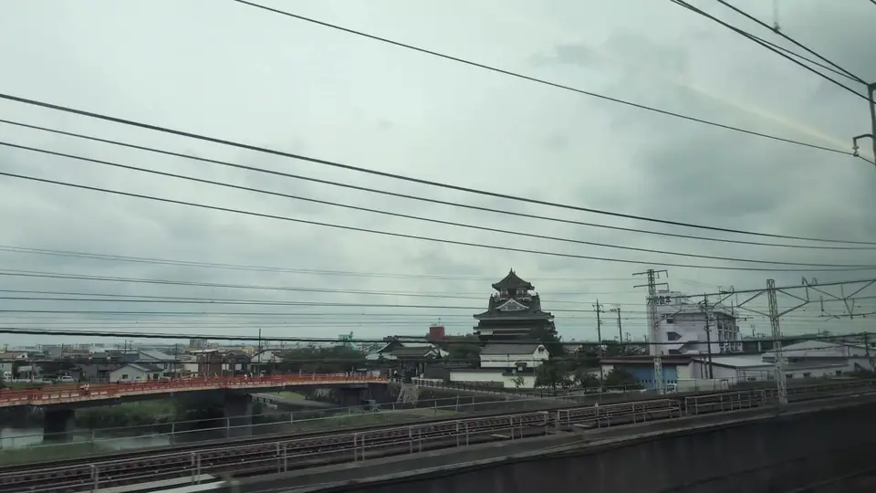

- Section
- Nagoya → Gifu-Hashima
- Seat side
- Seat E · mountain side
- Timing
- About 99 minutes after leaving Tokyo on a Nozomi train
- Photos
- 4 photos
How to get the shot in three seconds
Getting a clean photo of Kiyosu Castle from a moving train is genuinely hard, and for a specific reason: it is in view for only about three seconds, and because it sits so close to the line it sweeps past fast. If you wait until you see it, you have already missed it. The one real trick is to be aimed and waiting before it appears. Japanese train fans attempt this often enough that they have a name for it — the "Kiyosu Castle challenge".
Southbound (Tokyo → Shin-Osaka), get ready at the north-side window as soon as you leave Nagoya. Your cue is the Kirin Beer Nagoya Factory: once its row of giant silver tanks fills the window, Kiyosu Castle is next. It comes roughly three minutes after leaving Nagoya, so once the tanks have passed, hold your aim and count.
Northbound (Shin-Osaka → Tokyo) the order reverses — the castle comes first, then the Kirin factory. Your earlier marker is the Solar Ark, about four minutes ahead. The castle arrives slightly before the Nagoya arrival announcement, so do not use the announcement as your cue or you will be late. Be ready while the train is still at speed, before it starts slowing.
For settings, raise the shutter speed (around 1/1000s) or shoot a burst, and you can freeze the keep even at full speed. Pressing the lens close to the glass removes most of the reflections. Shooting through the window from your seat is fine, but please avoid standing in the vestibules or aisles to shoot, as it blocks other passengers.
What kind of castle is Kiyosu?
Kiyosu Castle was first built in the 15th century under the Shiba family, deputy governors of Owari Province, and grew dramatically as the base of Oda Nobunaga during the Sengoku era. From here Nobunaga set out to defeat the invading Imagawa Yoshimoto at the Battle of Okehazama in 1560, sealing his control of Owari. Kiyosu sat at a strategic crossroads between the Tokaido and routes to Mino and Ise provinces, and thrived as a castle town. After Nobunaga's assassination in 1582, the famous Kiyosu Conference — where Hashiba (Toyotomi) Hideyoshi, Shibata Katsuie, Niwa Nagahide and Ikeda Tsuneoki decided his succession and the division of his lands — was held at this castle, a well-known turning point in Japanese history.
More: Kiyosu CastleKiyosu City: Kiyosu Castle and the Kiyosu Conference (Japanese only)Kojodan: Castles visible from the Shinkansen
If you are traveling from Tokyo toward Shin-Osaka, start watching the Seat E · mountain side window as you approach Nagoya → Gifu-Hashima. If you are traveling toward Tokyo, the order is reversed.
What is the keep you see today?
In 1610, under Tokugawa Ieyasu's orders, the so-called Kiyosu-goshi ('Kiyosu Move') relocated the entire town and castle functions of Kiyosu to the new Nagoya Castle town. Kiyosu Castle was decommissioned then, and no castle-era buildings survive. The white-and-vermilion keep you see today beside the Gojo River is a modern reconstruction, built by Kiyosu City in 1989 for tourism and civic revitalization. It is not a faithful restoration of the historical keep, but its vivid coloring and prominent site have made it a fresh local landmark.
Inside, exhibits and interactive displays show how Nobunaga, Hideyoshi and Ieyasu were connected to Kiyosu. The keep, the river, the red Ote Bridge and the surrounding Kiyosu Castle Nobunaga Park form a scenic ensemble, especially popular in cherry-blossom season.
From the train, the red railings and white walls of the keep flash into view just north of the tracks, so look toward the Seat E window in advance. At Shinkansen speed the view lasts only a few seconds — but few castles along the Tokaido line come this close to the rails, which is exactly what makes the moment memorable.
Location at a glance
Open mapSwitch between the spot and the Shinkansen viewpoint.
How to catch Kiyosu Castle
1. Choose the window first
As you approach Nagoya → Gifu-Hashima, start watching from Seat E · mountain side. Use Live Guide while riding, or the map on this page before you board.
The clearest view lasts only a few seconds. Decide the seat side and window direction before it arrives rather than reaching for your camera late.
2. Highlights
Between Nagoya and Gifu-Hashima, look for a red-and-white structure just north of the tracks. The keep, the Gojo River and the vermilion Ote Bridge read as one composition. In cherry-blossom season or the evening, the vivid colors stand out against the river. At night the keep is illuminated, and the vermilion against the dark stands out especially well.
Kiyosu Castle in photos


 Related
Kirin Beer Factory
Related
Kirin Beer Factory
 Related
Solar Ark
Related
Solar Ark
 Related
Nagoya Station Skyline
Related
Nagoya Station Skyline